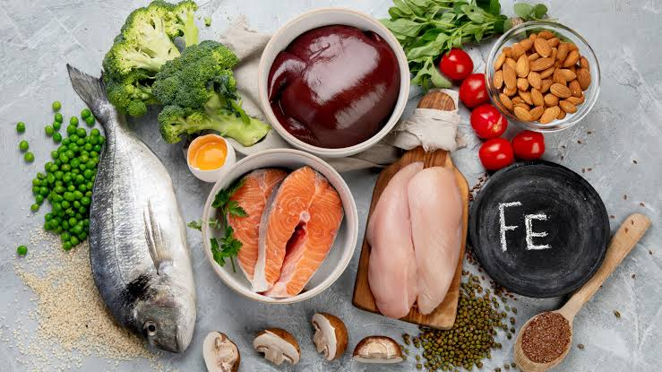

Cansancio o debilidad
Sentirte con menos energía de lo habitual.
Pequeños cambios, grandes resultados
Aprende qué es la anemia, reconoce algunos síntomas y descubre alimentos con hierro para sumar a tus comidas.
Información abierta: no necesitas registrarte.

Conoce para cuidarte
La anemia ocurre cuando la sangre no tiene suficientes glóbulos rojos sanos o hemoglobina para transportar el oxígeno que el cuerpo necesita. La falta de hierro es una causa frecuente, pero no la única.
Sentirte con menos energía de lo habitual.
Notar que te cuesta mantener la atención.
Son señales posibles, entre muchas otras.
Elige variedad
Explora ejemplos de alimentos e identifica opciones accesibles para tus compras.
Ideas sencillas para organizarte
Elige un día para consultar ejemplos de desayuno, almuerzo y cena. Puedes adaptar las ideas a tus gustos y presupuesto.
Este menú es un ejemplo educativo adaptado para la vida universitaria. Las necesidades alimentarias varían; consulta a un profesional si requieres orientación individualizada.